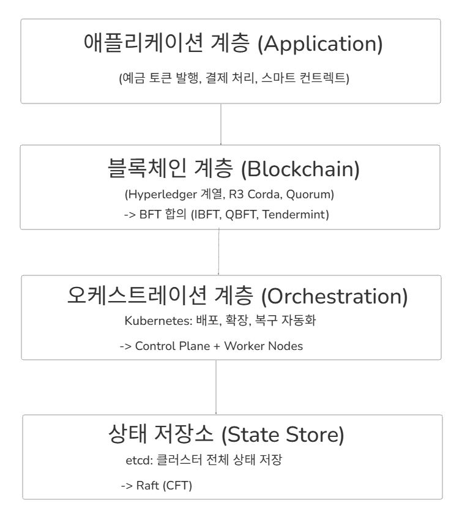
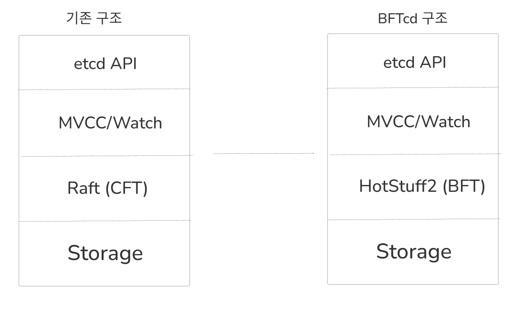
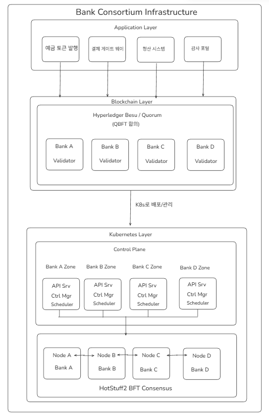
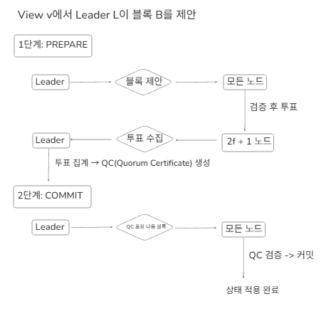
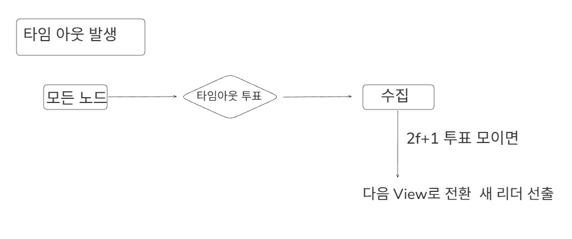
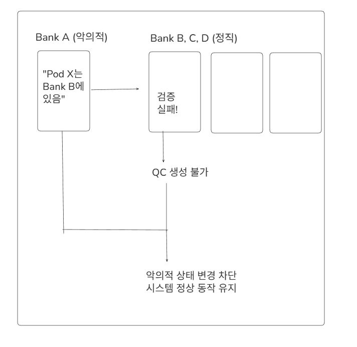
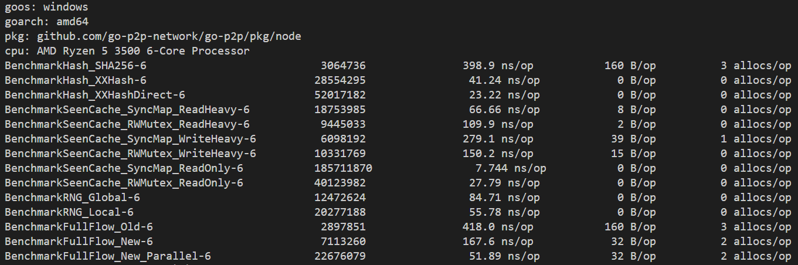
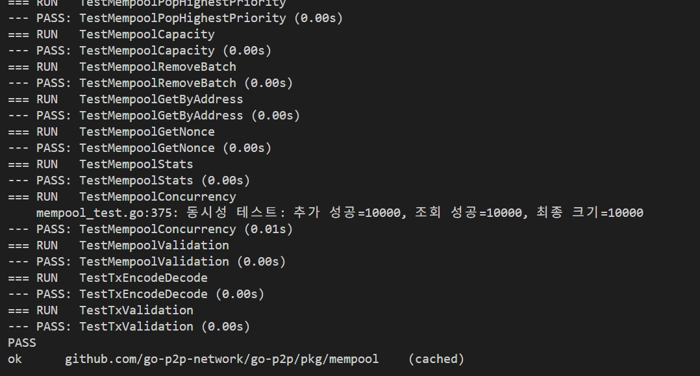

01상황: 어떤 프로젝트이고 무엇을 해결하는가
블록체인 노드 안에서 합의와 연결을 맡는 부분을 만들어 본 학습 프로젝트입니다. 세 갈래로 나뉩니다.
- consensus-study: PBFT 논문 정리, 코드 읽기 노트, PBFT 엔진 구현을 모아 둔 GitHub 조직입니다.
- LockFree-p2p-go: 노드끼리 연결하고 메시지를 퍼뜨리는 Go 라이브러리입니다.
- BFTcd: 같은 시기에 쓴 설계 제안서입니다. Kubernetes가 상태를 저장하는 etcd의 합의 방식을 BFT 합의로 바꾸자는 내용이며, 구현은 없습니다.
조직 소개 글에 적은 목표는 PBFT, HotStuff 같은 합의 논문을 읽고 그림으로 정리한 뒤, 작게 구현해 Cosmos SDK에 붙여 돌려 보는 것입니다. PBFT 저장소의 통합 가이드에는 CometBFT 대신 PBFT를 Cosmos SDK 앱의 합의 엔진으로 쓰는 것을 목표로 적었습니다.
- 해결하려는 문제
- 합의 엔진을 설정하고 쓰기만 해서는 노드 사이에 메시지가 어떤 순서로 오가는지 알 수 없었습니다. 외부 사용자의 문제가 아니라 제 학습 문제였습니다.
- 해결 방식
- PBFT의 세 단계 투표인 PRE-PREPARE(제안), PREPARE(준비), COMMIT(확정)과 리더 교체를 직접 구현해 ABCI 2.0 규격의 앱에 붙였습니다. 또 gRPC를 쓰면 라이브러리가 대신 처리해 주는 연결 계층을 TCP부터 직접 만들었습니다. 노드끼리 처음 연결할 때 정보를 주고받는 handshake, 연결할 노드를 찾는 peer discovery, 같은 메시지를 다시 퍼뜨리지 않게 거르는 dedup filter가 여기에 들어갑니다.
- 고른 이유
- Cosmos SDK는 합의 엔진과 앱이 ABCI라는 interface로 나뉩니다. 그래서 엔진만 바꿔 끼우는 실험을 할 수 있습니다.
시기 순서는 이렇습니다. 2025년 10월에 Besu 네트워크의 합의를 Clique에서 QBFT로 바꿨습니다. 11월 중순에는 Ignite로 만든 Cosmos SDK 로컬 체인에서 블록을 검증하는 노드인 밸리데이터를 만들고, 위임하고, 밸리데이터를 정지시키는 jail과 다시 풀어 주는 unjail을 명령으로 실습했습니다. PBFT 논문 정리는 11월 말에 시작했습니다.
4노드 테스트가 확인하는 동작은 이렇습니다. 트랜잭션 하나를 넣으면 네 노드가 PBFT 3단계로 합의해 블록을 확정합니다. 그 뒤 네 노드의 앱에서 같은 값이 조회됩니다. 리더가 멈췄을 때 다음 리더로 넘어가는 흐름도 여러 노드를 띄운 테스트로 확인했습니다.
02과제와 역할
스스로 정한 목표는 세 가지입니다.
- PBFT 3단계와 리더 교체(view change)를 구현하고, ABCI 2.0 메서드에 맞춰 앱과 연결합니다.
- 4노드에서 트랜잭션 하나가 네 노드 모두에 같은 상태로 반영되는지 테스트로 확인합니다.
- gRPC를 쓰면 라이브러리가 대신 처리해 주는 handshake, peer discovery, dedup filter 같은 연결 처리를 TCP부터 직접 만듭니다.
- 직접 설계하고 개발
- 논문 정리부터 합의 엔진, 앱 연결 adapter, 블록에 들어가기 전의 트랜잭션을 모아 두는 멤풀, gRPC 통신, 메트릭, P2P 라이브러리, 테스트, 문서까지 모두 직접 설계하고 만들었습니다. 혼자 한 프로젝트라 다른 사람이 맡은 부분은 없습니다.
- 범위
- 공개 저장소의 학습 구현이며, 운영 환경에는 띄우지 않았습니다.
03해결 과정
1. 아키텍처
PBFT 저장소에는 그림 파일이 없어 아래 애니메이션 다이어그램으로 대신합니다. PBFT 노드는 다음 요소로 이루어집니다.
- 합의 엔진(코드 이름 EngineV2): 합의 메시지와 요청을 채널로 받아 단계별 처리 함수로 보냅니다.
- 상태 로그: 합의할 요청마다 붙는 순번인 sequence number별로, 지금 어느 단계까지 왔는지와 어떤 노드가 투표했는지를 기록합니다. 100블록마다 남기는 기준점인 checkpoint를 기준으로, 마지막 checkpoint 다음 번호부터 200개 안에 드는 메시지만 받고 범위를 벗어난 메시지는 버립니다.
- view change 관리자: 리더 교체 투표인 VIEW-CHANGE를 모아 다음 view로 넘어가게 합니다. view는 지금 어느 노드가 리더인지 정하는 번호이고, 리더가 바뀔 때마다 다음 번호로 넘어갑니다.
- 앱 연결 adapter: 엔진과 앱 사이를 잇습니다. 외부 앱에 gRPC로 붙는 것, 같은 프로세스의 테스트 앱을 부르는 것, 앱 없이 합의만 도는 것 3가지입니다.
- 멤풀과 트랜잭션 전파 모듈(reactor): 트랜잭션을 모으고 다른 노드 멤풀로 보냅니다.
- gRPC 통신: 노드끼리 합의 메시지와 트랜잭션을 주고받고, 다른 노드가 상태를 맞추려고 블록을 요청하면 내어 줍니다. 이를 위한 원격 호출(RPC)을 8개 정의했습니다.
- 저장소: 블록과 checkpoint를 파일에 쓰고 다시 읽습니다. 노드 시작 경로에 연결해 재시작할 때 복구합니다.
- 메트릭:
/metrics주소로 Prometheus가 수집할 지표 11종을 내보냅니다. 포트 번호는 CometBFT가 쓰는 26656, 26658, 26660과 같게 맞췄습니다.
P2P 라이브러리는 PBFT 엔진과 별개입니다. 두 코드는 서로 연결하지 않았고, PBFT는 gRPC로 통신합니다. P2P 라이브러리는 다음 모듈로 나뉩니다.
- transport: TCP 연결을 열고 받습니다.
- protocol: 메시지마다 13바이트 헤더를 붙여 보냅니다. 받는 쪽은 헤더에 적힌 길이를 보고, TCP로 이어서 들어오는 데이터에서 메시지 하나를 잘라 냅니다. 이렇게 메시지 경계를 나누는 일을 framing이라고 합니다.
- PeerManager: 연결된 상대 노드인 피어를 최대 50개까지 관리합니다.
- discovery: 미리 정해 둔 seed 노드와, 피어끼리 주소를 퍼뜨리는 gossip 방식으로 연결할 피어를 찾습니다.
- BroadcastManager: 메시지를 다른 피어에 퍼뜨립니다. 이미 본 메시지는 dedup filter로 걸러 다시 보내지 않습니다.
- 멤풀: 아직 블록에 들어가지 않은 트랜잭션을 모아 둡니다.
2. 주요 흐름
흐름 1. 노드 4개에서 트랜잭션 하나가 블록이 되기까지
노드가 4개이면 그중 1개가 멈추거나 잘못된 메시지를 보내도 합의가 이어집니다. 각 단계는 4표 중 3표가 모여야 다음으로 넘어가며, 이 3표를 quorum이라고 부릅니다.
- 클라이언트가 트랜잭션을 넣습니다. 멤풀은 트랜잭션 크기, 이미 들어온 것과 겹치는지, 수수료 단가인 가스 가격이 최소 기준을 넘는지, 보낸 계정의 거래 순번인 nonce가 맞는지를 검사합니다.
- 전파 모듈이 트랜잭션을 다른 노드 멤풀로 보냅니다.
- 리더가 멤풀에서 트랜잭션을 최대 500개 꺼내, 블록에 담을 순서를 정하는 앱 함수
PrepareProposal에 넘깁니다. 앱이 돌려준 목록으로 블록을 만듭니다. - 리더가 블록 제안 메시지인 PRE-PREPARE를 보냅니다. 각 노드는 보낸 노드가 현재 리더인지 확인합니다. 이어서 앱 함수
ProcessProposal로 제안된 블록이 올바른지 검사받고, 준비 투표인 PREPARE를 보냅니다. - PREPARE가 3개 모이면 확정 투표인 COMMIT을 보냅니다. COMMIT도 3개 모이면 앱 함수
FinalizeBlock으로 블록 안의 트랜잭션을 실행하고Commit으로 결과를 반영합니다. - 멤풀에서 확정된 트랜잭션을 지웁니다. 100블록마다 여기까지는 확정됐다는 기준점인 checkpoint를 만들고, 그보다 오래된 합의 상태를 지웁니다.
흐름 2. 리더가 멈췄을 때
- 각 노드는 리더가 살아 있는지 보려고, 리더의 제안인 PRE-PREPARE를 받을 때마다 10초 타이머를 처음부터 다시 겁니다.
- 10초 안에 새 제안이 오지 않으면 리더 교체를 요청하는 VIEW-CHANGE를 보냅니다. 이 메시지에는 자기 checkpoint와, 준비 단계까지 마친 요청의 증거를 함께 싣습니다. 이 증거는 PRE-PREPARE와 quorum만큼의 PREPARE를 묶은 것으로, 코드에서는 Prepared 증명이라고 부릅니다. 타이머는 두 배 길이로 다시 겁니다.
- VIEW-CHANGE가 3개 모이면, 다음 리더가 될 노드만 새 view의 시작을 알리는 NEW-VIEW를 만듭니다. 마지막 checkpoint 이후 준비 단계까지 갔던 요청은 PRE-PREPARE를 다시 만들어 NEW-VIEW에 함께 싣습니다. 리더가 바뀌어도 이 요청들을 이어서 처리하기 위해서입니다.
- 다른 노드는 NEW-VIEW를 보낸 노드가 맞는 리더인지, 함께 실린 투표가 quorum을 채웠는지 확인합니다. 확인을 통과하면 새 view, 즉 새 리더 체제로 넘어갑니다.
흐름 3. P2P 메시지 전파
- 연결할 때 handshake로 서로의 정보를 주고받습니다. 이때 노드마다 가진 임의의 값인 Nonce를 함께 보내는데, 상대가 보낸 Nonce가 내 것과 같으면 자기 자신에게 연결한 것이므로 끊습니다.
- 메시지를 받으면 xxhash로 hash 값을 계산해 메시지를 구분하는 키로 씁니다.
- 이 키가 기록에 없는, 처음 본 메시지일 때만 다른 피어에 다시 보냅니다. 메시지를 보내 준 피어는 빼고, 나머지 중 무작위로 고른 7개 피어에 보냅니다.
- 본 메시지 기록은 10분 뒤 지웁니다.
3. 설계 고민과 결정
앱을 어떻게 부를 것인가
- 고민: 처음 만든 엔진은 자체 interface로 앱을 직접 호출했습니다. Cosmos SDK 앱은 ABCI 2.0으로만 통신합니다. 그래서 이 구조로는 실제 앱에 붙일 수 없었습니다.
- 선택지: 두 가지를 놓고 봤습니다. 엔진 코드 안에서 앱이 있을 때와 없을 때를 조건 분기로 나누는 방식과, 앱 연결을 interface 하나 뒤로 숨기고 구현만 갈아 끼우는 방식입니다.
- 결정: ABCI 2.0 메서드를 기준으로 엔진을 다시 만들고, 앱 연결은 앞에서 말한 adapter 3가지로 나눴습니다. 분기 방식은 테스트할 때와 실제 앱에 붙일 때 서로 다른 코드 경로를 지나게 되어 고르지 않았습니다.
트랜잭션 순서는 누가 정할 것인가
- 고민: 멤풀에는 트랜잭션을 가스 가격 순서로 정렬하는 기능이 있었습니다. 엔진이 이 순서대로 블록을 채울 수도 있었습니다.
- 결정: 엔진은 도착 순서로 꺼내 넘기기만 합니다. 정렬과 거르기는 앱의
PrepareProposal이 하게 했습니다. 잔액과 nonce 같은 상태를 가진 쪽이 앱이기 때문입니다.
빈 블록을 만들 것인가
- 고민: CometBFT는 트랜잭션이 없어도 일정 간격으로 빈 블록을 냅니다.
- 결정: 꺼낼 트랜잭션이 없으면 블록을 제안하지 않게 했습니다. 제안을 준비하며 미리 올려 둔 sequence number도 원래대로 되돌립니다.
lock-free 자료구조를 쓸 것인가
- 고민: lock-free 자료구조는 mutex 같은 lock 없이 여러 goroutine(Go의 가벼운 실행 단위)이 동시에 쓸 수 있게 만든 구조입니다. 하지만 이 방식이 늘 빠르다고 보지 않았습니다. 그래서 queue, hash map, priority queue를 lock-free 버전과 mutex 버전으로 각각 만들어 비교했습니다.
- 측정 결과는 다음과 같습니다. 모두 Windows 10과 Ryzen 5 3500 CPU를 쓰는 제 PC에서 쟀습니다.
- queue와 priority queue: mutex 쪽이 빨랐습니다. lock-free queue는 값을 넣을 때마다 heap allocation이 생겼습니다.
- hash map: 작업의 75%가 읽기인 조건에서는 lock-free 쪽이 약 2배 빨랐습니다. 이 lock-free hash map은 Split-Ordered List라는 알고리즘으로 직접 만들었습니다.
- dedup filter: Go가 기본으로 주는 concurrent map인 sync.Map과, read lock과 write lock을 나눠 거는 RWMutex로 보호한 일반 맵을 따로 비교했습니다. 읽기만 할 때는 작업 한 번에 RWMutex 맵이 27.79 ns(나노초), sync.Map이 7.74 ns로 sync.Map이 빨랐습니다. 쓰기가 많을 때는 RWMutex 맵이 빨랐습니다.
- 결정: dedup filter는 RWMutex 맵에서 sync.Map으로 바꿨습니다. 피어 관리는 처음부터 sync.Map을, 멤풀은 mutex와 heap을 쓰고 있었는데, 둘 다 측정 결과에 맞는 선택이라 그대로 뒀습니다.
dedup filter의 hash를 무엇으로 할 것인가
- 고민: 같은 메시지가 여러 피어에서 들어오므로 받을 때마다 hash를 계산합니다. 이 hash는 위변조 방지가 아니라 중복 판별용입니다.
- 결정: cryptographic hash인 SHA256의 결과를 문자열로 바꿔 키로 쓰던 방식을 버리고, 빠른 non-cryptographic hash인 xxhash가 내는 정수를 그대로 키로 썼습니다. 메시지 하나의 hash를 계산하는 시간이 398.9 ns에서 41.24 ns로 줄었습니다. 이 숫자는 지금 코드가 호출하는 방식으로 잰 값이고, 버퍼를 미리 준비해 두고 xxhash를 직접 부르면 23.22 ns였습니다.
4. 구현 상세
quorum과 단계 전이
- 합의에 필요한 최소 표 수인 quorum은
2*((n-1)/3)+1로 계산합니다. n은 노드 수이고, (n-1)/3은 견딜 수 있는 장애 노드 수 f이므로 quorum은 2f+1입니다. 4노드면 f는 1, quorum은 3입니다. - 리더는
view % validator 수번째 validator입니다. validator를 차례로 돌아가는 방식이라 리더가 바뀌는 순서를 예측할 수 있습니다. - 투표는 보낸 노드의 ID를 키로 저장합니다. 그래서 같은 노드의 표가 두 번 들어와도 한 번만 셉니다.
- 블록을 실행하기 전에 이미 실행한 블록인지 표시를 먼저 확인해, 같은 블록을 두 번 실행하지 않게 했습니다.
메트릭 11종
- 지금까지 확정된 블록 수인 블록 높이, 현재 view 번호, 리더 교체 횟수, 메시지 종류별로 보내고 받은 수, 합의와 블록 실행에 걸린 시간, 초당 처리한 트랜잭션 수(TPS)를 기록합니다.
- 합의가 멈추면 블록 높이가 더 오르지 않고 리더 교체 횟수가 늘어나도록 계측했습니다. 여기에 메시지 종류별 수신 수를 함께 보면, PREPARE에서 멈췄는지 COMMIT에서 멈췄는지처럼 어느 단계에서 멈췄는지 좁힐 수 있습니다.
- 지표를 내보내는
/metrics주소와, 엔진 안에서 값을 기록하는 instrumentation 코드를 만들었습니다.
P2P framing과 handshake
- 13바이트 헤더는 네 부분으로 이루어집니다. 이 프로토콜의 메시지임을 표시하는 Magic 4바이트, 메시지 종류를 나타내는 Type 1바이트, 본문 길이를 적는 Length 4바이트, 본문이 깨지지 않았는지 확인하는 checksum CRC32 4바이트입니다.
- Magic 값이 다르면 다른 프로토콜의 데이터로 보고 거절합니다. Length가 10MB를 넘으면 본문을 읽기 전에 거절하므로, 지나치게 큰 메시지를 메모리에 올리지 않습니다.
- handshake에는 전체 주소 대신, 다른 노드의 접속을 기다리는 listening port 번호만 보냅니다. 상대의 IP는 이미 맺어진 연결에서 알 수 있기 때문입니다. 반면 연결에서 보이는 포트는 운영체제가 잠깐 배정한 ephemeral port라서, 나중에 다시 연결할 때는 쓸 수 없습니다.
5. 같은 시기에 쓴 설계 제안서: BFTcd
PBFT와 P2P를 구현하던 2025년 12월 중순에 설계 제안서를 썼습니다. 코드는 없고 문서와 그림만 있습니다.

제안서가 짚은 문제는 은행 컨소시엄 인프라에서 계층마다 가정하는 장애가 다르다는 점입니다. 블록체인 계층은 일부 노드가 잘못된 메시지를 보내도 견디는 BFT 합의를 씁니다. 그런데 블록체인 노드를 배포하는 Kubernetes는 클러스터 상태를 etcd라는 저장소에 둡니다. etcd는 Raft로 합의하는데, Raft는 노드가 멈추는 장애만 가정합니다. 이런 방식을 CFT라고 부릅니다. 그래서 제안서에는 한 은행의 etcd 노드가 잘못된 배포 정보를 보내도 Raft로는 걸러낼 수 없다고 적었습니다.


- 결정: Kubernetes 쪽은 고치지 않아도 되도록 etcd가 밖에 내놓는 API는 그대로 두고, 안쪽 합의 방식만 BFT 합의인 HotStuff2로 바꾸자고 제안했습니다.
- 이유: 같은 BFT 합의라도 PBFT는 노드가 늘면 주고받는 메시지 수가 노드 수의 제곱에 비례해 늘어납니다. 같은 달에 쓴 비교 글에서 세어 보니, 노드가 100개면 한 번 합의할 때 PBFT의 PREPARE와 COMMIT 메시지만 19,800개였습니다.
- 제약: Go로 된 HotStuff2 구현이 없어, Rust로 된 구현을 Go로 옮겨야 한다고 적었습니다.



04트러블슈팅
4노드에서 자기 표가 집계에서 빠지던 문제
- 문제
- 4노드 테스트를 붙이며 투표를 세는 코드를 다시 보니, 리더가 아닌 노드는 PREPARE를 2개까지만 모을 수 있었습니다. 다음 단계로 가려면 quorum인 3개가 필요하므로, 이대로면 합의가 준비 단계에서 넘어가지 못합니다.
- 원인
- 메시지를 모든 노드에 보내는 broadcast 함수는 자기 자신에게는 보내지 않습니다. 그래서 자기가 낸 표가 자기 집계에서 빠졌습니다. 리더는 PREPARE를 보내지 않으므로, 리더가 아닌 노드에게 남는 것은 다른 두 노드의 표뿐이었습니다.
- 해결
- PREPARE와 COMMIT을 보낼 때 자기 표를 자기 집계에 먼저 넣게 했습니다. 리더는 PRE-PREPARE를 보낼 때 자기 PREPARE 한 표를 넣습니다.
- 결과
- quorum 2f+1을 셀 때는 자기 표도 한 표로 들어갑니다. 자기 자신에게는 보내지 않는 broadcast를 쓴다면, 보내는 순간 자기 표를 먼저 집계에 넣어야 한다는 것을 확인했습니다.
gossip 전파의 data race
- 문제
- 메시지를 보낼 피어를 무작위로 고르려고 피어 목록을 섞는데, 이때 쓰는 난수 생성기 하나를 여러 goroutine이 같이 썼습니다. 같은 날 전파 경로를 손보면서 넣은 코드였습니다.
- 원인
- Go의
rand.Rand는 여러 goroutine이 동시에 쓰면 안전하지 않습니다. 여러 피어에서 온 메시지를 동시에 다시 보내면 같은 생성기를 동시에 건드리게 됩니다. 이렇게 여러 goroutine이 보호 장치 없이 같은 데이터를 동시에 고치는 상황을 data race라고 합니다. - 해결
- 전파 함수가 불릴 때마다 그 안에서만 쓰는 지역 난수 생성기를 만들어 쓰게 했습니다. 같은 때, 본 메시지 기록 전체를 훑어 지우던 정리 함수도 없애고, 기록을 10분 뒤 지우는 TTL 만료에 맡겼습니다.
- 결과
- 여러 goroutine이 같이 쓰던 난수 생성기를 없앴습니다. 호출마다 지역 생성기를 만들어 섞는 방식은 전역
rand.Shuffle을 쓰던 방식보다 빨랐고, 한 번 실행에 걸리는 시간이 84.71 ns에서 55.78 ns로 줄었습니다.

05결과
- 수상과 배포는 없습니다. 공개 저장소의 학습 구현입니다.
- PBFT 4노드 시나리오 테스트를 작성했습니다. 한 컴퓨터 안에서 노드 4개를 띄워 gRPC로 서로 연결한 뒤, 한 노드에 트랜잭션을 넣습니다. 그리고 10초 안에 네 노드의 앱이 모두 같은 값을 돌려주는지 확인합니다.
- PBFT 엔진에는 여러 부품을 함께 돌려 보는 통합 테스트 10개와, 부품 하나씩 확인하는 단위 테스트 11개를 작성했습니다.
- P2P 라이브러리에는 테스트 25개와, 성능을 재는 벤치마크 41개를 작성했습니다.
- P2P 라이브러리가 메시지를 받을 때마다 hash를 계산하고 이미 본 메시지인지 확인하는 구간은, 메시지 하나에 418.0 ns 걸리던 것이 167.6 ns로 줄었습니다. 같은 구간에서 메시지 하나마다 새로 잡는 메모리도 160바이트에서 32바이트로 줄었습니다. SHA256과 RWMutex 맵을 xxhash와 sync.Map으로 바꾼 결과입니다. 이 숫자는 이 구간만 떼어 제 PC에서 잰 값이라, 다른 피어로 보내는 시간과 네트워크를 오가는 시간은 들어 있지 않습니다.

06배운 점
"2f+1개를 모은다"는 문장에 자기 표가 들어간다는 것을 4노드 테스트를 붙이며 알았습니다.
lock-free queue는 mutex queue보다 느렸습니다. lock-free 쪽이 빨랐던 것은 읽기가 대부분인 hash map뿐이었습니다. 자료구조는 읽기와 쓰기 비율을 재고 고릅니다.
블록 높이, view, view change 횟수 같은 지표가 엔진의 어떤 상태에서 나오는지 코드로 확인했습니다. 그래서 높이가 멈췄을 때 볼 순서가 생겼습니다. view change 횟수를 먼저 보고, 메시지 타입별 수신 수로 멈춘 단계를 좁히는 순서입니다.